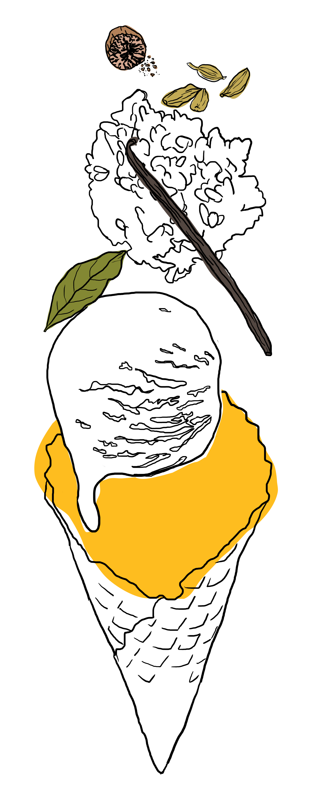

Roasted banana ice cream: the creamiest of cold creams ever.
Ingredients
- 1 cup jasmine rice
- 1½ cups whole milk
- 8 egg yolks
- 2 cups heavy cream
- 3/4 cups sugar
- 1 bay leaf
- 1/4 tsp. nutmeg
- ½ tsp. ground cardamom
- ½ vanilla bean, seeds scraped out
- pinch of salt
Directions
- Put rice in a saucepan and add enough water to cover it. Bring the water to a boil, then reduce the heat to low and simmer until the rice softens. Drain any excess water.
- Add 1 cup of milk, ½ cup sugar, salt, the bay leaf, cardamom, nutmeg, and the vanilla bean seeds and pod.
- Bring to a simmer and then reduce heat and keep it uncovered until fully cooked and the milk has been mostly absorbed by the rice. You can refrigerate the rice pudding until it is ready to be used.
- Prepare a large bowl filled with ice water with a smaller bowl sitting in the water. This will be used to cool the cooked custard later.
- Combine the remaining 1/5 cup milk, heavy cream, and pinch of salt in a medium saucepan and heat over low to medium heat.
- Meanwhile, whisk together the egg yolks with the remaining 1/4 cup sugar in a separate bowl.
- Once steam is coming off of the heated milk/cream in the saucepan, pour a splash into the egg mixture while whisking it continuously.
- Continue to add small amounts of the milk/cream to the eggs while whisking until you've added all of it into the separate bowl.
- Pour the combined mixture back into the saucepan and set over low to medium heat. Stir continuously with a rubber spatula or wooden spoon.
- After stirring for several minutes the custard will start to thicken. Once you can pick up the spatula or spoon and the custard sticks to it, hold it horizontally and run your finger through the custard. If it leaves a trail that stays, your custard is ready.
- Take it off the heat and strain the custard into the bowl set over the ice bath. Stir for about 5 minutes until the custard has cooled.
- Once the custard has cooled, fold in the rice pudding until combined.
- Place the custard in an airtight container and let the it cool completely in the fridge (this is important people!) for at least 4 hours, but preferably overnight.
- Once it's ready, churn it according to your ice cream maker's instructions until it's the consistency of soft servce. You can eat it right away for a softer texture, or freeze it for later.